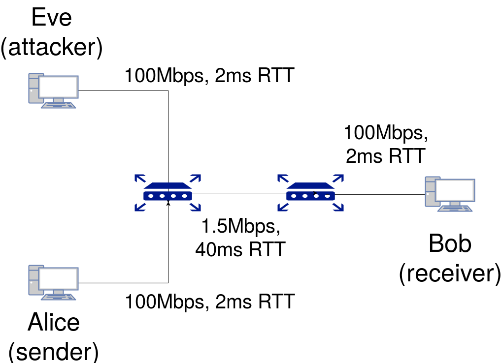

DoS attacks can be detected by counter-DoS mechanisms such as CouldFlare due to their high data rate. Here, we simulate a 'Low-Rate TCP targetted DoS attack' which is harder to detect as compared to the traditional DoS attacks.
These low-rate DoS attacks make use of the TCP congestion control's Retransmission TimeOut (RTO) functionality to reduce communication between a sender and a receiver. Instead of flooding the network with continuous or large traffic,
as in a normal DoS attack, we 'time' these floods such that they congest the network right when the TCP sender retransmits when there is a packet loss. This will lead to the sender waiting for another RTO period, after which this flood
repeats again. These bursts have a data rate just sufficient enough to congest the bottleneck link that is present between the sender and the receiver. Since the bursts take place for a very small duration, the average data rate isn't
expected to reach a value that can be detected.
Hence by carefully timing these attack bursts, we can evade counter-DoS mechanisms, and at the same hinder communication between the TCP sender and receiver.
Note the way the current RTO value changes. In the TCP used, that is, TCP New Reno, RTO value is expected to double everytime a lost packet is retransmitted. That is, assume as a certain point of time, it has RTO value equal to that of minRTO value, that is, 1 second. Then the subsequent RTO values for every packet retransmitted will be 2,4,8,16 ..so on. However once, an acknowledgement is successfully received RTO value is set back to the value calculated by the formula:
RTO = max(minRTO,SRTT + max(G,4*RTTVAR))
where minRTO is decided by the type of TCP and the system the TCP runs on, SRTT refers to Smoothed Round-Trip Time (calculated from measured RTT) and RTTVAR refers to Round-Trip Time Variation.One way to launch a very successful attack is to time the attacker bursts at the exact time the sender is about to send some packets. The animation above shows a similar scenario.
